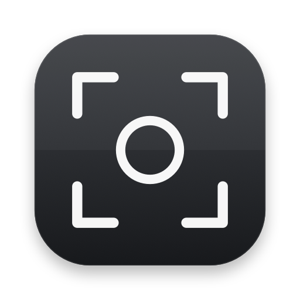

Press the hotkey
Capture the active macOS window without switching tools or opening a ticket form.
Open-source macOS dev tool
Turn visual QA into a precise local task bundle: hotkey, box the issue, add the note, save it straight into the project your agent is already editing.
Markup stays out of the way until the UI breaks in front of you. The route can be configured per app, and capture output lands inside the repo as plain files.
Capture the active macOS window without switching tools or opening a ticket form.
Draw one clear rectangle on the screenshot so the issue is spatial, not vague.
Type or dictate a short note, with optional 10-second recording for motion bugs.
The bundle appears where your local agent or maintainer workflow can pick it up.
Every capture becomes a timestamped folder with markdown instructions, machine-readable metadata, the marked screenshot, the original screenshot, and an optional recording.
<project>/.markup/feedback/
20260512-091733-figma-a7c42e/
instruction.md
metadata.json
screenshot.png
screenshot-original.png
recording.movThe marked screenshot, original screenshot, coordinates, app identity, and note travel together.
Each app can point to a project folder and a feedback folder name that you can edit later.
The output is ready for a maintainer, a coding agent, or a repo-specific triage script.

Markup is a SwiftPM macOS app. Run it directly while hacking, or build the app bundle for a native menu bar workflow.
swift run Markup
./scripts/build-app.sh && open .build/Markup.app
./scripts/package-app.sh